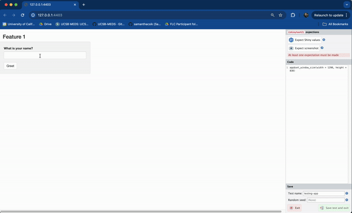
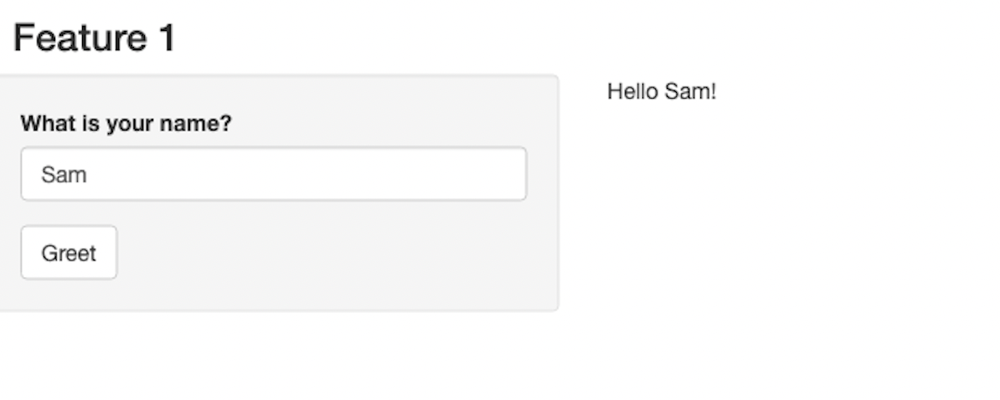
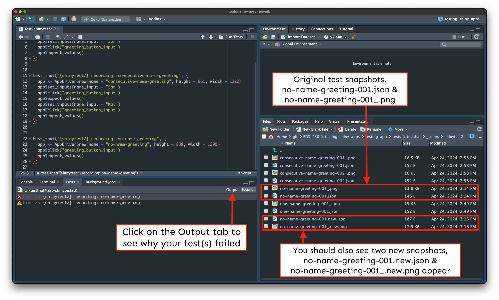

We’ll repeat this workflow to test each of our three assumptions listed on the previous slide.
EDS 430: Part 6.2
Testing
Week 2 | February 2nd, 2024
Testing
Creating automated tests for your apps can save time and effort, ensuring that they continue working as expected.
Learning Objectives for Testing
After this section, you should:
understand some of the reasons why apps break and the benefit of having automated tests
have a basic understanding of how to use the {shinytest2} package to create regression tests
know how to rerun tests
Packages introduced:
{shinytest2}: provides tools for creating and running automated tests on Shiny applications
This workflow should look a bit familiar . . .
But what if you have 20 apps?
Or many team members?
It becomes increasingly challenging to remember all the features you need to test, or how each works. Things can also get lost in translation with manual testing (e.g. can you explain to your coworker(s) all of your app’s features and make sure that they manually test it properly?).
Slide adapted from Barret Schloerke’s rstudio::conf(2022) talk, {shinytest2}: Unit testing for Shiny applications
Why test our Shiny apps?
It’s almost inevitable that our app(s) will (at some point) break – there are lots of reasons why this happens, but to name a few:
an upgraded R package(s) has a different behavior (this includes {shiny}) – this is especially relevant for those apps hosted on servers, where server software (including packages) may be updated by system administrators
you make changes to your app (e.g. add new features, refactor code)
an external data source stops working or returns data in a different format than that expected by your app
Manually testing Shiny apps is takes a lot of time and effort, is often inconsistent, and doesn’t scale well (e.g. for larger apps, many apps, or for larger teams of collaborators).
It can save a lot of time and headache (for you and your collaborators) to have an automated system that checks if your app is working as expected.
Different levels/types of tests:
https://www.atlassian.com/continuous-delivery/software-testing/types-of-software-testing
Enter the {shinytest2} package
The {shinytest2} package provides useful tools for unit testing Shiny apps. This process is also known as regression testing, since we’ll be testing existing app behavior for consistency over time (we don’t want app behavior to regress).
From the {shinytest2} documentation:
“{shinytest2} uses {testthat}’s snapshot-based testing strategy. The first time it runs a set of tests for an application, it performs some scripted interactions with the app and takes one or more snapshots of the application’s state. These snapshots are saved to disk so that future runs of the tests can compare their results to them.”
With {shinytest2}, we can interact with our app via the “app recorder” and our test code will be automatically generated for us. We can then rerun tests to check for consistency as we iterate on our app.
{shinytest2} uses {chromote} to render your app in a headless Chromium browser – by default, it uses Google Chrome, so make sure you have that installed on your OS!
Let’s imagine . . .
Your boss has tasked you with building a Shiny app, and asks that you begin with a feature that greets users by name. Create a new folder, testing-app/, in your GitHub repo and add the following files:
testing-app/ui.R
ui <- fluidPage(
# Feature 1 ------------------------------------------------------------------
h3("Feature 1"),
# fluidRow (Feature 1: greeting) ----
fluidRow(
# greeting sidebarLayout ----
sidebarLayout(
# greeting sidebarPanel ----
sidebarPanel(
textInput(inputId = "name_input",
label = "What is your name?"),
actionButton(inputId = "greeting_button_input",
label = "Greet"),
), # END greeting sidebarPanel
# greeting mainPanel ----
mainPanel(
textOutput(outputId = "greeting_output"),
) # END greeting mainPanel
) # END greeting sidebarLayout
), # END fluidRow (Feature 1: greeting)
) # END fluidPage testing-app/server.R
server <- function(input, output) {
# Feature 1 ------------------------------------------------------------------
output$greeting_output <- renderText({
req(input$greeting_button_input) # req(): textOutput doesn't appear until button is first pressed
paste0("Hello ", isolate(input$name_input), "!") # isolate(): prevents textOutput from updating until button is pressed again
})
}Manually test your app and make note of how it works
Let’s say that you are satisfied with your work (yay!) and are now ready to write some automated tests to ensure consistent behavior as you continue to build out additional features.
Write down your assumptions
Before we dive into writing any tests, it’s super helpful to inspect your app and, importantly jot down any assumptions it makes of both the inputs and outputs.
I find it easiest to consider which actions can be taken, and what the expected outputs (aka assertions) in the app’s final state should be.
| Action(s) | Expectation(s) |
|---|---|
| Type [some text value] in text box, click Greet button | Greeting output is “Hello [some text value]!” |
| Type [some text value] in text box, click Greet button, type [some other text value] in text box, click Greet button | Greeting output is “Hello [some other text value]!” |
| Click Greet button | Greeting output is “Hello !” |
Test your assumptions using the {shinytest2} workflow
Generally speaking, that workflow looks something like this:
(1) Run shinytest2::record_test(<app-directory>) in your Console to launch the app recorder in a browser window
(2) Interact with your application and tell the recorder to make an expectation of the app’s state, which will record all input, output, and exported values.
(3) Give your test a unique name and quit the recorder to save and execute your tests
We’ll repeat this workflow to test each of our three assumptions listed on the previous slide.
FYI (a warning about chromote time outs)
If you receive the following error message after running, shinytest2::record_test("testing-app"), you’ll need to restart R:
It’s a pretty annoying error, which seems to be an ongoing issue with {chromote}. R may be slow to restart (and I’ve had to restart numerous times ).
Let’s test our first assumption . . .
…which is that when a user types [some text value] into the text box and clicks the Greet button (i.e. the actions), the greeting output will return Hello [some text value]! (i.e. the expectation). We’ll substitute a known value (e.g. “Sam”) for [some text value] in our test.

Steps:
(1) Run shinytest2::record_test("testing-app") in the Console
(2) Type Sam into the text box > click the Greet button > click Expect Shiny Values
(3) Give the test a unique name (e.g. one-name-greeting) > click Save test and exit
(4) The test recorder will quit, and your test will automatically execute (it should pass!)
Notice that your actions (e.g. typing text, clicking the button) are recorded as code in the right-hand panel – this is your test code, and it’ll be saved when you quit the recorder.
Your test should automatically run (and pass!)
After quitting the test recorder, the following will happen:
<your-app-subdirectory>/tests/testthat/test-shinytest2.Rtest-shinytest2.R will automatically open in the editorshinytest2::test_app() is run behind the scenes to execute the test scriptYou should see the following in your RStudio Console:
• Saving test runner: tests/testthat.R
• Saving test file: tests/testthat/test-shinytest2.R
✔ Adding 'shinytest2::load_app_env()' to 'tests/testthat/setup-shinytest2.R'
• Running recorded test: tests/testthat/test-shinytest2.R
✔ | F W S OK | Context
✔ | 2 1 | shinytest2 [1.4s]
───────────────────────────────────────────────────────────────────────────────────────────
Warning (test-shinytest2.R:7:3): {shinytest2} recording: one-name-greeting
Adding new file snapshot: 'tests/testthat/_snaps/one-name-greeting-001_.png'
Warning (test-shinytest2.R:7:3): {shinytest2} recording: one-name-greeting
Adding new file snapshot: 'tests/testthat/_snaps/one-name-greeting-001.json'
───────────────────────────────────────────────────────────────────────────────────────────
══ Results ════════════════════════════════════════════════════════════════════════════════
Duration: 1.5 s
[ FAIL 0 | WARN 2 | SKIP 0 | PASS 1 ]Understanding the contents of tests/
The first time you record a test, {shinytest2} generates number of directories / subdirectories, along with a bunch of files. The next few slides explain these in more detail.
After creating your first test, your repo structure should look something like this:
.
├── testing-app/
│ └── global.R
│ └── ui.R
│ └── server.R
│ └── tests/ # generated the first time you record and save a test
│ └── testthat.R # see note below
│ └── testthat/
│ └── setup-shinytest2.R # see note below
│ └── test-shinytest2.R # see slide 15
│ └── snaps/
│ └── shinytest2/
│ └── *001.json # see slide X
│ └── *001_.png # see slide X testthat.R: includes the code, shinytest2::test_app(), which is executed when you click the Run Tests button in RStudiosetup-shinytest2.R: includes the code, shinytest2::load_app_env(), which loads any application support files (e.g. global.R and / or anything inside R/) into the testing environmenttest-shinytest2.R (test code)
All tests will be saved to tests/testthat/test-shinytest2.R. Yours should look similar to the code below (sans annotations). You may have a different viewport height / width (depending on the size of your viewport when you recorded your test), and if you mistyped / deleted any characters in the textInput, you’ll see multiple app$set_inputs() statements, reflecting these actions:
testing-app/tests/testthat/test-shinytest2.R
library(shinytest2)
# runs our test
test_that("{shinytest2} recording: one-name-greeting", {
# start Shiny app in a new R session along with chromote's headless browser that's used to simulate user actions
app <- AppDriver$new(name = "one-name-greeting", height = 838, width = 1298)
# set the textInput (with Id `name_input`) to the value `Sam`
app$set_inputs(name_input = "Sam")
# click the actionButton (with Id `greeting_button_input`)
app$click("greeting_button_input")
# save the expected input, output, and export values to a JSON snapshot and generates a debug screenshot of the app
app$expect_values()
})The snaps/ folder
When shinytest2::test_app() runs your test code (test-shinytest2.R), it plays back the specified actions (e.g. setting the textInput to Sam, then clicking the Greet button), and records your application’s resulting state as a snapshot. Snapshots are saved to the tests/testthat/shinytest2/_snaps/ folder. You should see two different snapshot files:
one-name-greeting-001_.png, a debug screenshot of the app when app$expect_values() was called:

one-name-greeting-001.json, a JSON representation of the state of the app when app$expect_values() was called:
We don’t have any exported values in our app, and we won’t be covering those here. Read more about exported values in the {shinytest2} documentation.
A quick recap of our test files
{shinytest2} to follow to simulate user actions (i.e. inputs).
*_.png file) can be used to visually inspect your app’s state at the time of your test.
*_.png file differs from a *.png file (which we did not capture). *.png files are screenshots of the application from app$expect_screenshot() (i.e. by clicking Expect screenshot in the app recorder), which you can use to ensure that the visual state of the application does not change. If subsequent screenshots differ (even by just a pixel!), your test will fail. This type of testing is quite brittle, and we won’t be covering it further.All of the above files should be tracked with git (ignore any _.new.png files).
Rerun your test
Rerun your test by clicking on the Run Tests button, which is visible when test-shinytest2.R is open. They should all still pass (we haven’t changed anything since our first test run)!
Test our remaining assumptions
| Action(s) | Expectation(s) |
|---|---|
| Type [some text value] in text box, click Greet button | Greeting output is “Hello [some text value]!” |
| Type [some text value] in text box, click Greet button, type [some other text value] in text box, click Greet button | Greeting output is “Hello [some other text value]!” |
| Click Greet button | Greeting output is “Hello !” |
03:00
test-shinytest2.R should now look like this:
Or at least fairly close to this (maybe you chose slightly different names to test with):
testing-app/tests/testthat/test-shinytest2.R
library(shinytest2)
test_that("{shinytest2} recording: one-name-greeting", {
app <- AppDriver$new(name = "one-name-greeting", height = 1335, width = 1126)
app$set_inputs(name_input = "Sam")
app$click("greeting_button_input")
app$expect_values()
})
test_that("{shinytest2} recording: consecutive-name-greeting", {
app <- AppDriver$new(name = "consecutive-name-greeting", height = 837, width = 1294)
app$set_inputs(name_input = "Sam")
app$click("greeting_button_input")
app$set_inputs(name_input = "")
app$set_inputs(name_input = "Kat")
app$click("greeting_button_input")
app$expect_values()
})
test_that("{shinytest2} recording: no-name-greeting", {
app <- AppDriver$new(name = "no-name-greeting", height = 837, width = 1294)
app$click("greeting_button_input")
app$expect_values()
})You can rerun all your tests at once by clicking the Run Tests button again (they should all pass!).
Your boss requests an improvement on feature 1!
Your boss is excited to see your progress, but would love to see an informative message pop up when a user clicks the Greet button without first typing in a name (currently, clicking the Greet button without typing a name will return “Hello !”… which is a bit odd). You make the following update to your app:
testing-app/server.R
server <- function(input, output) {
# Example 1 ------------------------------------------------------------------
# wait for user to click the Greet button before returning the message
observe({
# if the user does not type anything, return the message, "Please type a name, then click the Greet button."
if (nchar(input$name_input) == 0) {
output$greeting_output <- renderText({
"Please type a name, then click the Greet button."
})
# if the user does type a name, return the greeting, "Hello [name]!"
} else {
output$greeting_output <- renderText({
paste0("Hello ", isolate(input$name_input), "!")
})
}
}) |>
# TODO: add description here
bindEvent(input$greeting_button_input)
}Rerun your tests after making your update
Our first two tests pass, but the third one failed . You’ll see something like this to start:
Click on the Output tab for more information on why the test failed (see next slide).
The Output tab tells us what caused our test to fail
There’s a lot of helpful information here, but lines 6-7 tell us that our no-name-greeting test failed, while lines 17-27 here tell us exactly what changed:
==> Testing R file using 'testthat'
[ FAIL 0 | WARN 0 | SKIP 0 | PASS 0 ]Loading required package: shiny
[ FAIL 1 | WARN 1 | SKIP 0 | PASS 2 ]
── Failure (test-shinytest2.R:25:3): {shinytest2} recording: no-name-greeting ──
Snapshot of `file` to 'shinytest2/no-name-greeting-001.json' has changed
Run testthat::snapshot_review('shinytest2/') to review changes
Backtrace:
▆
1. └─app$expect_values() at test-shinytest2.R:25:3
2. └─shinytest2:::app_expect_values(...)
3. └─shinytest2:::app__expect_snapshot_file(...)
4. ├─base::withCallingHandlers(...)
5. └─testthat::expect_snapshot_file(...)
── Warning (test-shinytest2.R:25:3): {shinytest2} recording: no-name-greeting ──
Diff in snapshot file `shinytest2no-name-greeting-001.json`
< before
> after
@@ 5,5 / 5,5 @@
},
"output": {
< "greeting_output": "Hello !"
> "greeting_output": "Please type a name before clicking the Greet button."
},
"export": {
[ FAIL 1 | WARN 1 | SKIP 0 | PASS 2 ]
Warning messages:
1: package ‘testthat’ was built under R version 4.3.1
2: package ‘shiny’ was built under R version 4.3.1
Test completeWe’ll want to update our expected results
Our test correctly failed (the expected output was different)! But we’ll want to update our test’s expected output so that it reflects the changes we made to our app (i.e. that when a user clicks the Greet button without first typing a name is the text, “Please type a name before clicking the Greet button.” is printed).
To do so….
TODO
Tests should all pass now!
Okay, you’re boss has requested a new feature:
Please also download these CSV files and save them to your Desktop (we’ll use these later).
Tips for testing
Record subsequent tests following the same workflow, giving each a unique name. Run test_app("path/to/app") to run all test scripts in your app’s tests/testhat/ directory.
Use record_test() fairly often – Barret Schloerke argues that you should make a test recording for each feature of your app (many little recordings are encouraged!)
Limit testing to objects under your control. For example, let’s say you have a reactive data frame that you then send to a DT::datatable – if package maintainers update the DT package, your output might change which could lead to false positive failed tests. Instead, test just your data frame that gets sent to DT.
This is only a brief intro to shinytest2! Dig into the documentation to learn more.
End part 6.2
Up next: streamlining code
05:00